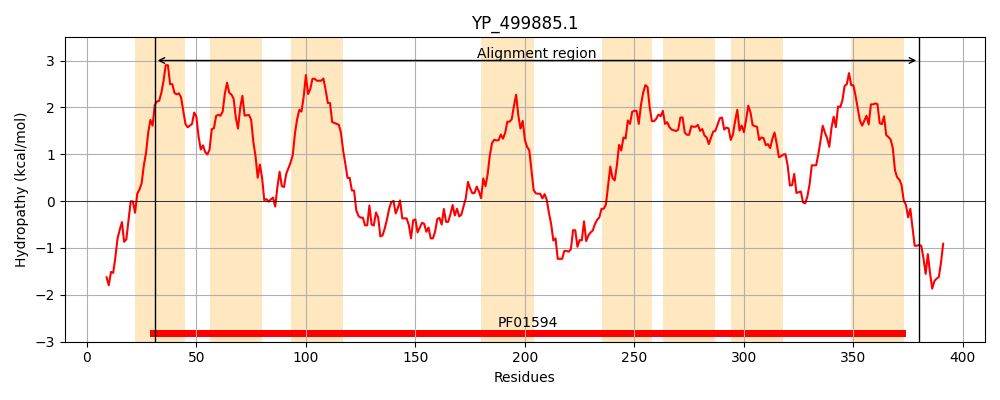
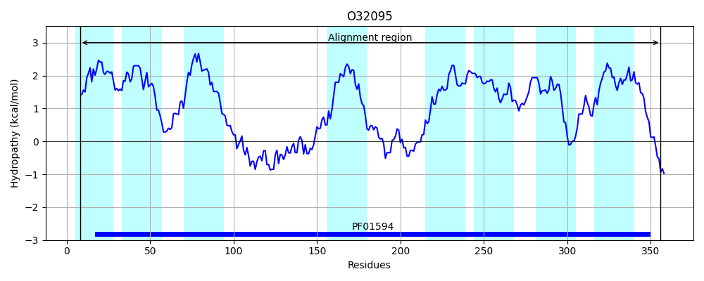
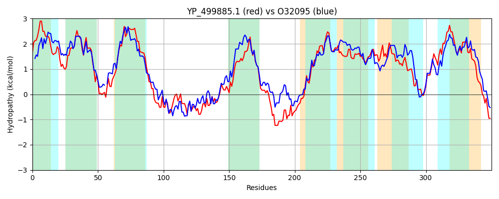

Hit Accession: O32095
Hit TCID: 2.A.86.1.8
Hit Description: gnl|BL_ORD_ID|7086 gnl|TC-DB|O32095|2.A.86.1.8 UPF0118 membrane protein yueF OS=Bacillus subtilis GN=yueF PE=3 SV=1
Mach Len: 350
e:0.000000
Query TMS Count : 8
Hit TMS Count: 8
TMS-Overlap Score: 8.200000
Predicted Substrates:None
BLAST Alignment:
Score: 641 , Bit scores: 251 bits, E-value: 1.8e-80, Alignment length: 350, Percentage identity: 34
Query: 31 FSLIALVLLGIVIFIFEKVSYVFDPFIIVFKTIAAPIIVSLILFYLFNPIVNMMERYRIPRVAGISIIYLAVVGVITLIVNLLIPIIGSQVDSLVKNSPQYLEKLINSIDKIANNTFFSSYYSQINDWLNSLPKKIPSMLSEFTDGFGSKIATFAETIANIGVVIVTTPFVLFFMLKDGHHFKEFSTNIMPPKFRKDFHDLLEKMSVQVGSYIQGQIIVSFCIGILLFIGYSVIGLKYSLVLASIAAVTSVVPYLGPTIAISPAIVIAAITSPWMLLKLAVVWTLVQFVEGHFISPNIMGKTLKIHPLTIIFILLCAGKLLGIVGVILGIPGYAILKVLVTHLFQLFKRR 380
F + ++ + ++IF+ KVS+VF PFI+ T+ P++++ IL+++FNP+V ++E+ +IPR I +IYL +G++ I + PII +QV L N P Y++++ ++++ +F+ +Q ++ + + + S L S ++ + NI +VI+T PF+LF+MLKDGH F + I+P +R + + + +S + +Y QGQ+++ +G FIGY + GL Y+L+L + A+T+++PY+GP + +PA+++ + SP L +V +VQ ++G+ +SP ++GK L HPLTII +L+ AG GI+G+IL +P YA++K ++ +L K R
Sbjct: 8 FWTLQILFVLLIIFVATKVSFVFQPFIVFISTLFFPMLIAGILYFIFNPVVRLLEK-KIPRTLSILLIYLLFIGLLAFISASVGPIITAQVTGLFNNLPDYIKQIQALTKDLSHSQWFTWMMNQDYVSISKIEQSLTSFLQNLPQNITSSLSAVFGVVTNITLVIITVPFILFYMLKDGHRFPHLAVKILPASYRTEGLKIFKDLSDTLAAYFQGQLLICLFVGTACFIGYLIAGLPYALILGIVMAITNIIPYVGPFLGAAPAVIVGFMDSPAKALFAIIVVVIVQQLDGNLLSPLVIGKRLNTHPLTIILLLIGAGSFGGILGMILAVPVYAVVKAFFLNIVRLIKLR 356 | Protein Hydropathy Plots: |
|---|
|  |  |
Pairwise Alignment-Hydropathy Plot:
|
|---|
|  |